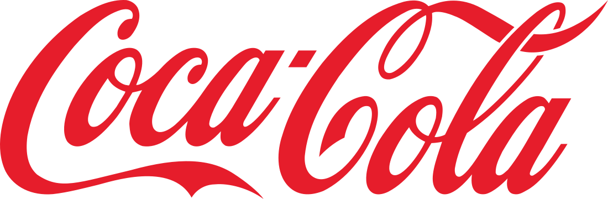

|  | |
|
A história da Coca-Cola inicia com a chegada do farmacêutico John Pemberton na cidade de Atlanta nos Estados Unidos, logo após a Guerra Civil americana.
Ele havia acabado de participar da guerra e estava disposto a mudar de vida, em busca de uma nova clientela que comprasse suas ideias e medicamentos. Por não ter nenhuma habilidade em vendas, sempre fracassou em suas criações, até conhecer o contador Frank Robinson, que acaba tornando-se sócio. 1884 – Foi lançada a bebida alcoólica chamada “Pemberton's French Wine Coca”, anunciada como uma bebida intelectual, vigorante do cérebro e tônica para os nervos, sendo, inicialmente uma mistura de folhas de coca, grãos de noz-de-cola e álcool. 1886 – O puritanismo religioso estava em alta e havia todo um movimento antiálcool. Nenhuma mulher ou homem decente poderia ser visto em lugares que fornecessem esse tipo de bebida. Neste mesmo ano, todos os estabelecimentos que vendiam álcool foram fechados e Pemberton e Robinson se viram na procura por outro produto que lhes rendessem dinheiro. Naquela época existiam os chamados “Pontos de Vendas”, lugares aonde pessoas iam após as compras, para se reunir e tomar sorvetes e xaropes misturados com água carbonada nos mais diferentes sabores, e que possivelmente acabaram dando ideias para a produção de um novo produto. Tentando se encaixar neste novo padrão, Pemberton passou meses no porão de sua casa em Atlanta, adicionando ingredientes à água carbonada para fazer um xarope e, mandando amostras para a “Jacob’s Pharmacy”, para testar a opinião dos clientes. |
|
| Rodapé | |